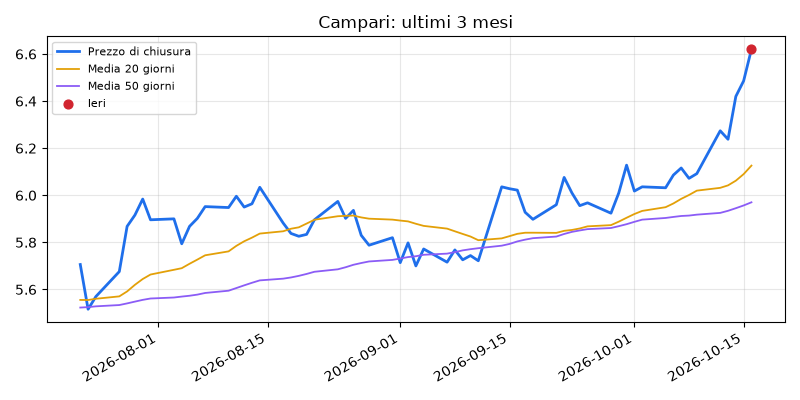

Campari (CPR.MI)
Chiusura di ieri: 6,62 €
52,4%
probabilità storica di salire tra apertura e chiusura, su 457 casi simili. Guadagno medio in questi casi: +0,03%

I segnali
- Tendenza in salita (prezzo sopra le medie mobili a 20 e 50 giorni)
- RSI alto: il titolo è salito molto (ipercomprato)
- MACD: nessun incrocio
- Volumi nella norma
- Ha superato il massimo degli ultimi 20 giorni
- Ieri forte rialzo (oltre +2%)
Perché questo titolo
Il titolo Campari mostra un trend positivo, supportato da una recente rottura tecnica e da un'impostazione giornaliera forte. Nei 457 casi storici simili a questo, l'azione ha chiuso in rialzo nel 52.4% delle volte, con un guadagno medio dello 0.03%. Tuttavia, l'indicatore RSI è alto, segnalando che il prezzo è cresciuto molto velocemente. Le notizie delle ultime ventiquattro ore non evidenziano novità societarie dirette, quindi l'andamento dipenderà essenzialmente dai movimenti tecnici del mercato.
Cosa potrebbe andare storto
Dato che l'indicatore RSI è già elevato e il guadagno medio storico è appena dello 0.03%, il rischio principale è che gli investitori decidano di incassare i profitti recenti provocando un calo improvviso del prezzo.
Parola del giorno
RSI: L'RSI è un indicatore che misura quanto velocemente e intensamente il prezzo di un'azione è salito o sceso di recente. Quando è alto, indica che il titolo è stato acquistato molto e potrebbe avere bisogno di una pausa. Immagina un corridore che scatta a tutta velocità: prima o poi dovrà rallentare per riprendere fiato.
Notizie delle ultime 24 ore: giudizio neutro
- Il Dopolavoro giovedì ha chiuso per lavori: è finita l’era di "Baky" - Prima la Martesana (Prima la Martesana)
- Cavaliere - Federazione Italiana Sport Equestri (Federazione Italiana Sport Equestri)
- Cavallo - Federazione Italiana Sport Equestri (Federazione Italiana Sport Equestri)
- La trattoria a Milano che non è trappola per turisti: che risotto! - Scatti di Gusto (Scatti di Gusto)
- Bluegem rileva Rispo per portare all'estero la pinsa e la focaccia romana surgelate - Quotidiano Nazionale (Quotidiano Nazionale)
Sotto soglia: solo per studio, non per investire.